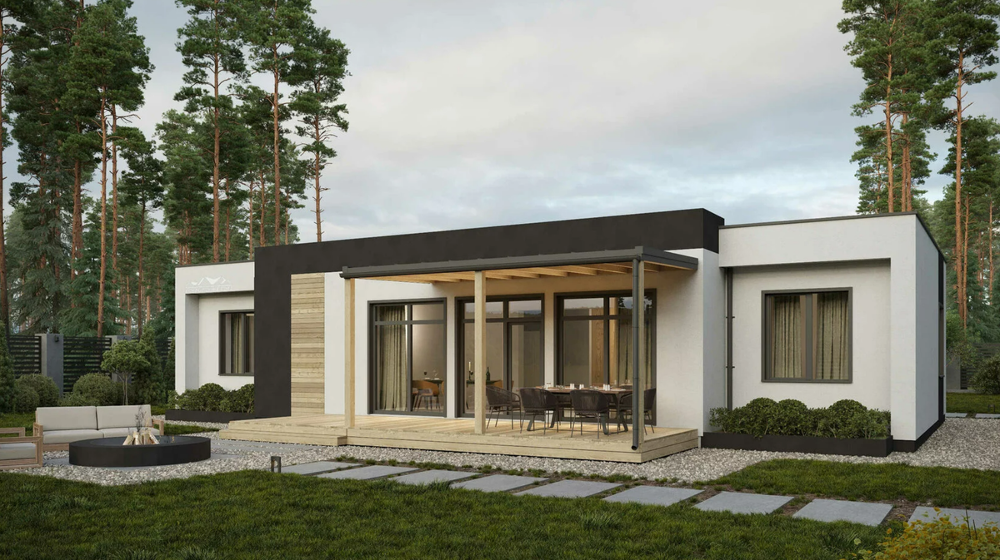
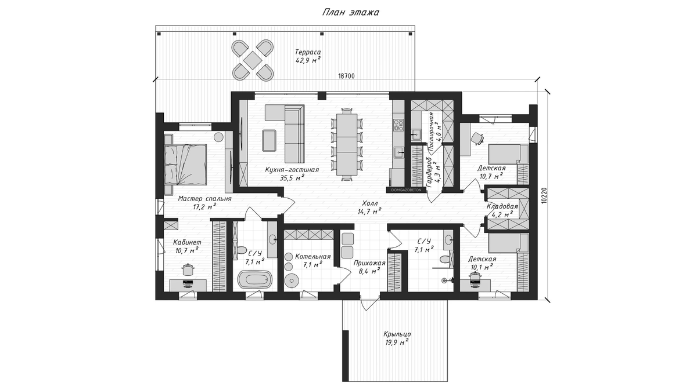
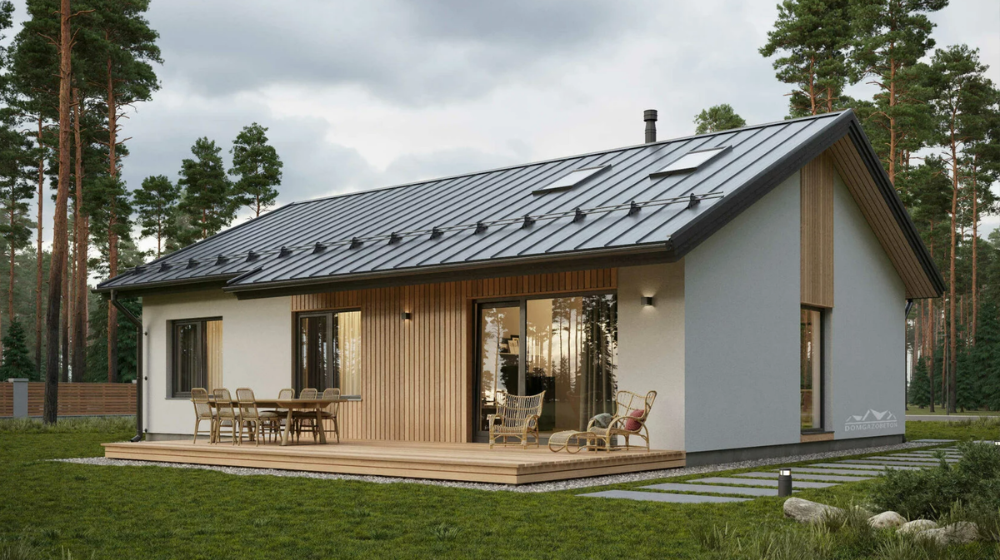
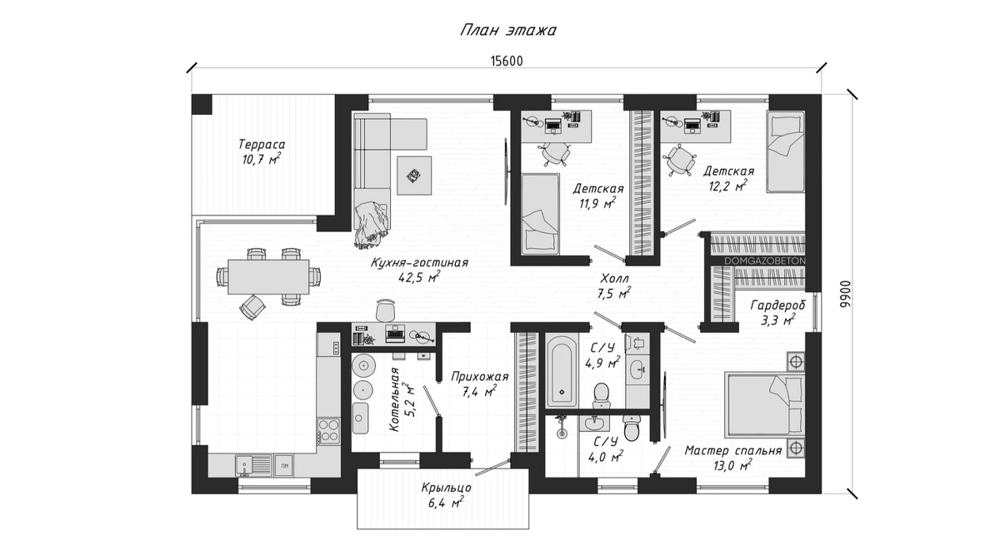
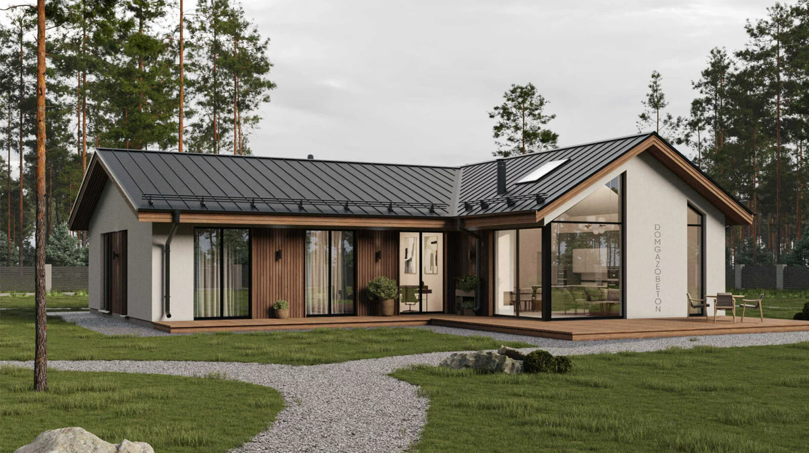
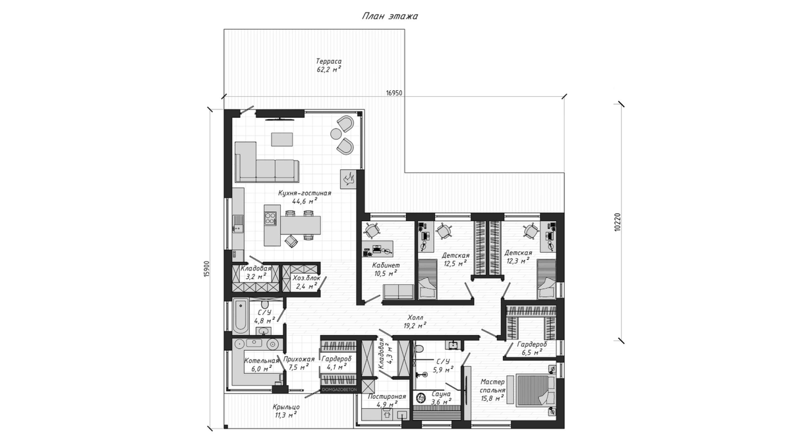
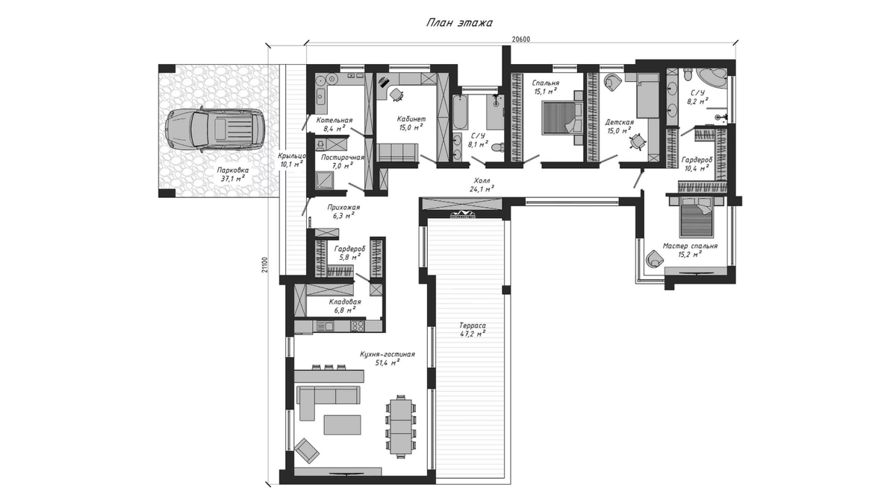
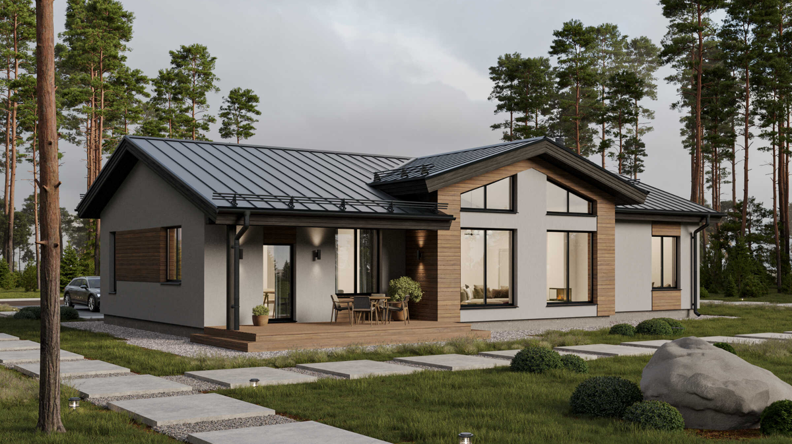
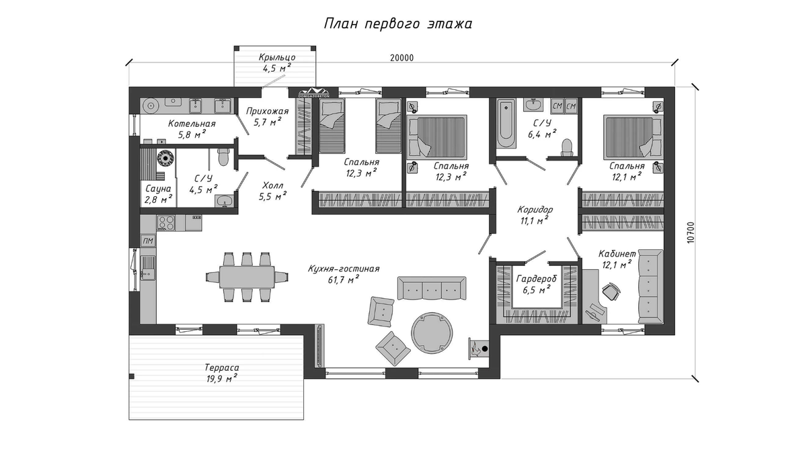

Удачная планировка одноэтажного дома — это когда каждый квадратный метр работает, нет «лишних» коридоров и зон, и сценарии жизни семьи легли естественно. Ниже — пять наших популярных проектов от 118 до 196 м², которые мы строили уже много раз. За счёт повторов удалось оптимизировать решения, сократить сроки и снизить стоимость. В каждый проект можно внести изменения: поменять площади, переставить комнаты, добавить сауну, гараж или навес для авто, увеличить зону хранения.
1. «Коркино» — скандинавский для семьи с детьми, 140 м²
Компактный и лаконичный одноэтажный дом в скандинавском стиле с плоской кровлей и летней террасой. Базовый сценарий — семья с двумя детьми, плюс кабинет.
- Общая площадь: 140 м²
- Терраса и крыльцо: 63 м²

В проекте предусмотрено:
- Мастер-спальня с кабинетом
- Две детские
- Большая кухня-гостиная
- Два санузла
- Гардеробная с постирочной

2. «Ламполово» — компактный со скатной кровлей, 118 м²
Самый бюджетный по площади из пятёрки. Скатная кровля, много естественного света, есть холодный чердак — при желании его потом можно превратить в дополнительный мансардный этаж.
- Общая площадь: 118 м²
- Терраса: 11 м²

В проекте предусмотрено:
- Мастер-спальня
- Две детские
- Большая кухня-гостиная со вторым светом
- Два санузла

3. «Канисты» — Г-образный с закрытым двором, 196 м²
Просторная терраса 62 м² и много мест для хранения. Г-образная форма — внутренний двор закрыт от посторонних взглядов и шума дороги. Хорошо подходит для участка вдоль улицы.
- Общая площадь: 196 м²
- Терраса и крыльцо: 74 м²

В проекте предусмотрено:
- Мастер-спальня
- Две детские
- Кабинет
- Большая кухня-гостиная
- Два санузла

4. «Давыдково» — П-образный с очагом во дворе, 196 м²
Дом П-образной формы с панорамными окнами и террасой с очагом во внутреннем дворе, закрытой от ветра и соседей. Функциональное зонирование: зона отдыха и приёма гостей, зона сна, техническая часть — каждая со своим входом.
- Общая площадь: 196 м²
- Терраса и крыльцо: 58 м²
В проекте предусмотрено:
- Мастер-спальня
- Ещё две спальни
- Кабинет
- Кухня-гостиная 51 м²
- Кладовая, постирочная

5. «Изумрудное» — со вторым светом и сауной, 158 м²
Одноэтажный дом со скатной кровлей и вторым светом. Центральное место — кухня-гостиная 62 м² с выходом на террасу. Из «вкусного» — встроенная сауна, гардеробная и кабинет.
- Общая площадь: 158 м²
- Терраса и крыльцо: 25 м²

В проекте предусмотрено:
- Три спальни
- Гардеробная
- Кабинет
- Кухня-гостиная 51 м²
- Кладовая, постирочная
- Сауна

Как выбрать планировку под себя
Главное — отталкиваться не от красивых рендеров, а от сценариев жизни семьи. Несколько ориентиров:
- Семья с детьми, бюджет в норме — «Коркино» 140 м² или «Ламполово» 118 м². Скандинавский минимализм, нужное минимум.
- Участок вдоль шумной дороги — Г-образное «Канисты» или П-образное «Давыдково». Закрытый внутренний двор спасает от шума и взглядов.
- Любите свет и простор — «Изумрудное» 158 м². Второй свет в гостиной + скатная кровля визуально увеличивают пространство.
- Хотите готовый набор «всё включено» — «Изумрудное» с сауной и гардеробной, либо «Давыдково» с очагом во дворе.
Чего нельзя делать на этапе выбора планировки
- Брать чужой готовый проект, не оглядываясь на свой участок. Г-образный дом на участке поперёк улицы откроется во двор не туда.
- Экономить на гардеробной и постирочной. Это та «невидимая» площадь, без которой ежедневный быт ломается.
- Делать спальни рядом с гостиной без буферной зоны. Шум вечером доходит до тех, кто рано встаёт.
- Игнорировать ориентацию по сторонам света. Кухня на север и спальня на запад — типовая ошибка, которая видна только зимой и летом.
Что DOMGAZOBETON делает на своих объектах
За 10 лет работы и 300 построенных домов мы отработали серию типовых планировок одноэтажных домов из газобетона D400 400 мм. Каждый из пяти проектов выше построен не один раз — поэтому стоимость, сроки и материалы предсказуемы. Любую планировку адаптируем под участок и сценарии семьи. Все проекты, как мы строим, обсудить проект.
FAQ
Какая минимальная площадь одноэтажного дома для семьи с двумя детьми?
Комфортный минимум — около 118–140 м²: мастер-спальня, две детские, кухня-гостиная, два санузла, гардеробная. Меньше — придётся жертвовать гардеробной или санузлом.
Что лучше — одноэтажный или двухэтажный дом?
При одинаковой жилой площади одноэтажный обычно дороже за счёт фундамента и кровли большей площади. Но удобнее в эксплуатации: нет лестницы, всё на одном уровне. Двухэтажный — компактнее в плане, выгоднее на узком участке.
Можно ли переделать планировку под себя?
Да, в любой проект можно внести изменения: поменять площади и положение комнат, добавить сауну, гараж, навес для авто, расширить зону хранения. Это нормальный этап работы с конструктором перед стартом стройки.
Источники
- ДОМ.РФ — рынок ИЖС и стандарты индивидуального жилищного строительства: дом.рф.
- НААГ — рекомендации по домам из автоклавного газобетона: gazo-beton.org.